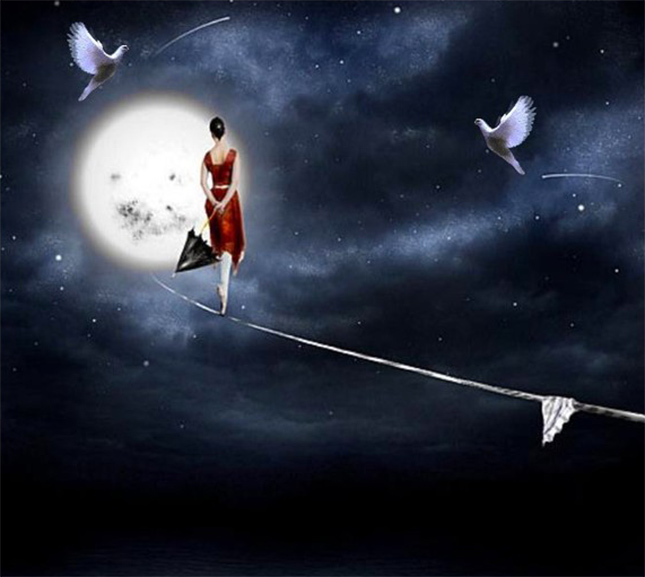

Stage sur le cycle lunaire
Rencontre avec les différentes facettes du féminin
La femme jouit naturellement d'un fort potentiel grâce au changement hormonal qui se vit dans son utérus et ses ovaires. Sa psyché regorge de richesses enfouies sous un amas de croyances socio-culturelles, d'ignorance et de blessures non guéries. C'est par la connaissance de sa profonde féminité qu'elle peut puiser dans ses richesses afin d'équilibrer, d'harmoniser, sa vie de femme, d'amante, d'épouse, de mère, de créatrice.
Le but de ce stage est de transmettre la sagesse ancestrale de la profonde féminité à travers les 4 archétypes lunaires. Pareil aux phases de la lune, le cycle menstruel se découpe en 4 phases bien distinctes, régies par les archétypes de la sorcière, la vierge, la déesse mère, et l'enchanteresse.
Nous découvrirons leurs qualités, leurs différences, leurs besoins. Nous explorerons leurs ombres, sources de souffrances physiques et/ou psychiques. Ainsi, les parts blessées, exilées, pourront se sentir apaisées et reconnues, et réintégrer la roue des archétypes pour pouvoir mener une vie plus équilibrée et épanouissante.
Le stage est ouvert à un petit groupe de femmes, un samedi par mois, de 14h à 16h.
La transmission se déroule sur 5 ateliers, une présence assidue est nécessaire à l'intégration.
Tarif: 40 euros
Lieu: 1 rue cancé, Toulouse